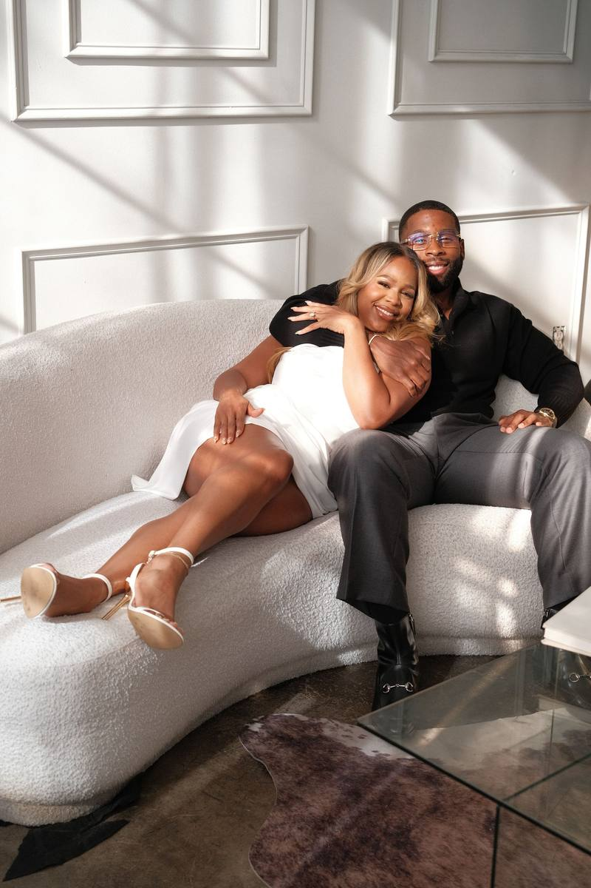
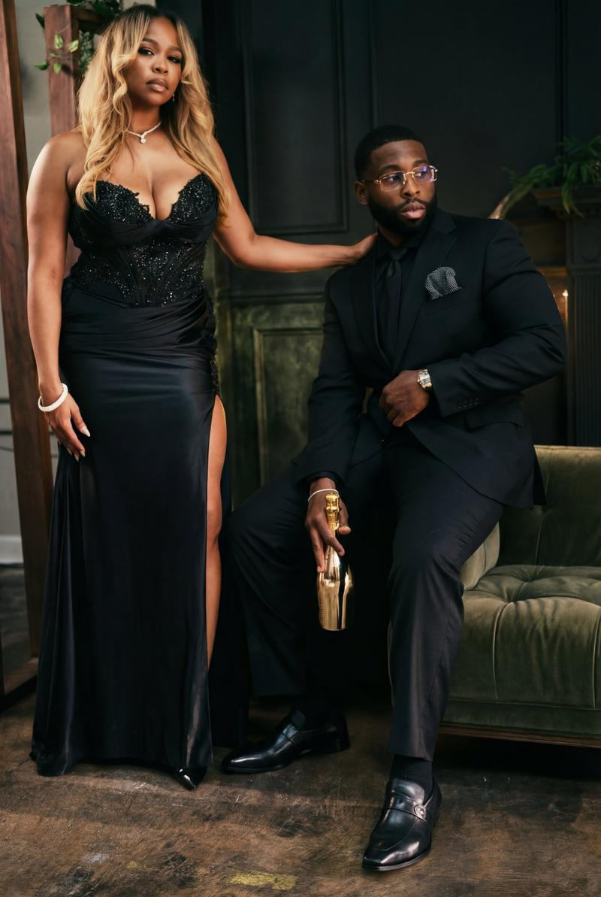
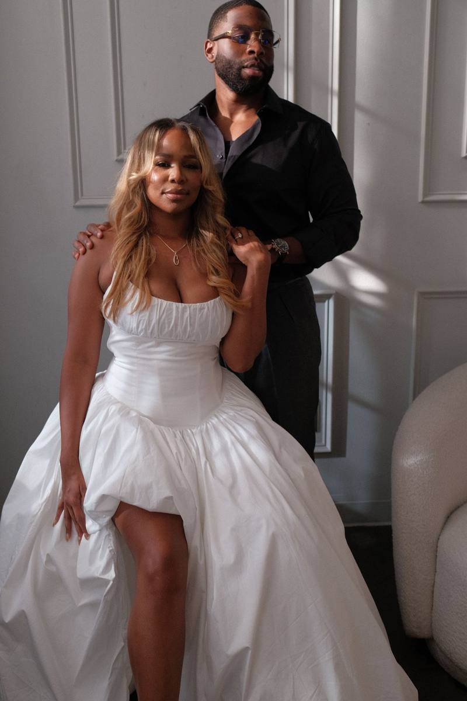
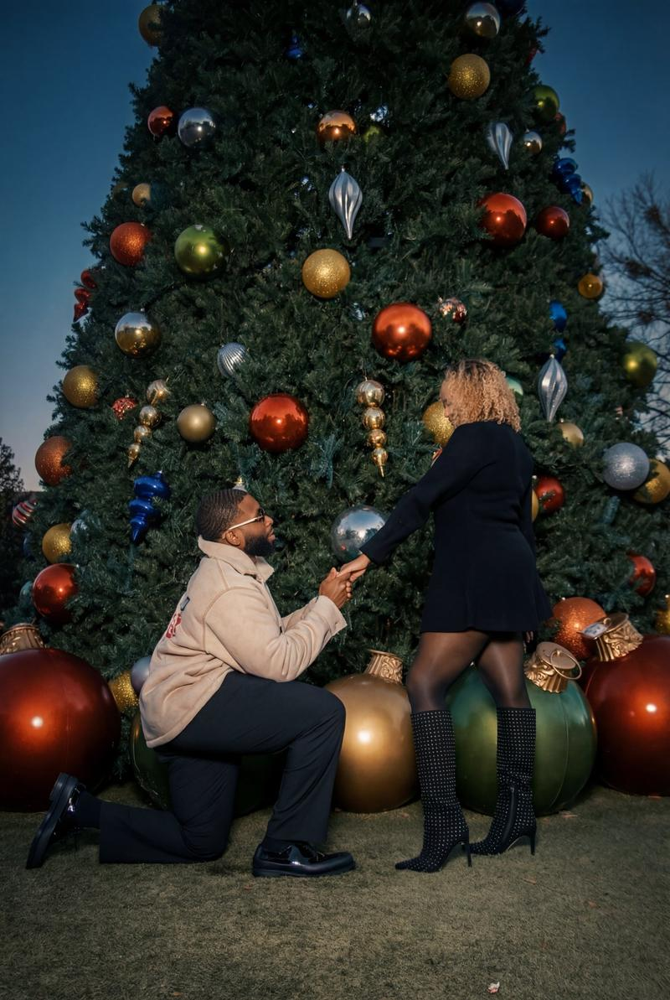
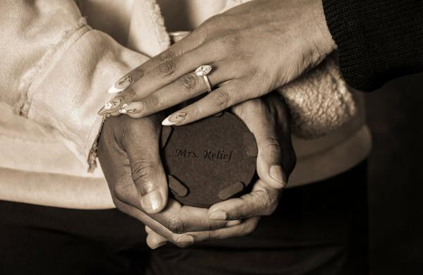

Two People Who Had No Business
Finding Each Other
Somehow did.
The Beginning
In the summer of 2019, two people who had no business finding each other somehow did. Caitlin had just finished her Doctorate in Optometry and moved to Henderson, North Carolina to start her career. Independent, confident, and not looking for love. If you know Caitlin, you know she just wanted to have a good time.
Then there was Rob. Fresh off his MBA and new to Charlotte. No friends, no family, and no plan to sit still. He was focused on becoming the kind of man who could choose a wife, not stumble into one. There was just one problem: he enjoyed his freedom a little too much.

Left, Left, Left… Match
They met the way a lot of modern love stories begin: on Hinge. Here's the thing though: they both swiped left on each other. Multiple times. But the algorithm gods kept putting them in front of each other until they finally took the time to actually read each other's profiles.
Caitlin thought Rob seemed intelligent, confident, and interesting. Rob thought Caitlin was cute and intriguing. She was a doctor from PG County. He was a Detroit man working in business and tech. After they matched, the conversations were easy. The FaceTimes were long. And it wasn't long before she made the three-hour drive from Henderson to Charlotte.
The Toxic Tango
What followed was roughly a year and a half of what Caitlin affectionately calls “the toxic tango.” Rob was noncommittal. Caitlin was all in. She was ready to build. He was still protecting his freedom, his identity, and his dreams.
There were bruised egos, bold social media posts, and what Rob refers to as “competitive motivation.” Two stubborn, ambitious people doing everything except admitting they needed each other. But Caitlin never wavered.

The Movement
Rob describes it as a revelation, almost an out-of-body experience where he could finally see himself, see her, and see the situation like an outsider looking in. Like a big brother tapping him on the shoulder saying, “You know you're wrong right now, right?”
What followed was an overwhelming wave of emotion he couldn't explain. And Rob is not an emotional man. But when the big man upstairs speaks, he listens. He embraced Caitlin, and he chose her.

The Growth
They moved in together, because how do you really know if you can marry someone without sharing a home? Over the next four years, they traveled. They argued. They compromised. They learned how to share space, even on the days when they didn't particularly like each other.
She tested his patience. He tested her independence. And slowly, the relationship stopped being about changing one another and started being about accepting one another. When she let him be him. When he let her be her. That's when it clicked.
The Proposal
Four years later, on their anniversary at the Ritz-Carlton at Lake Oconee, Rob asked Caitlin to marry him in front of the biggest Christmas tree he could find, because if you know Caitlin, you know Christmas is her favorite holiday. She had no idea it was coming.
He didn't propose because it was perfect. He didn't propose because it was easy. He proposed because it was clear. He chose her because she chose him. Fully, patiently, and with a love that never wavered.

